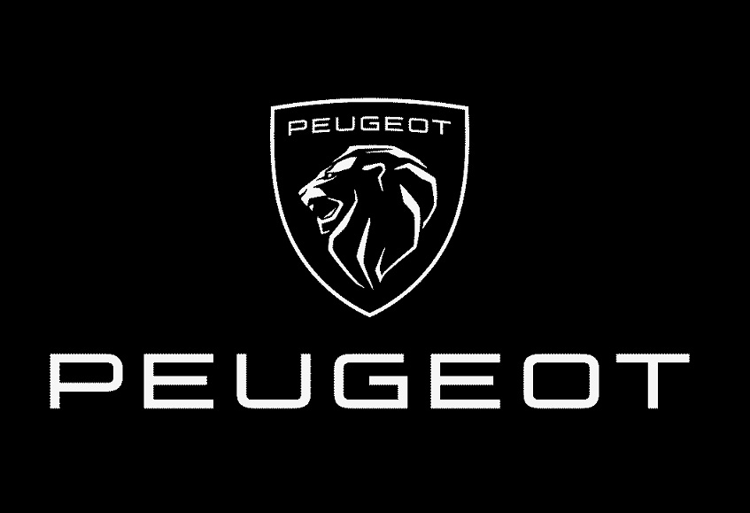
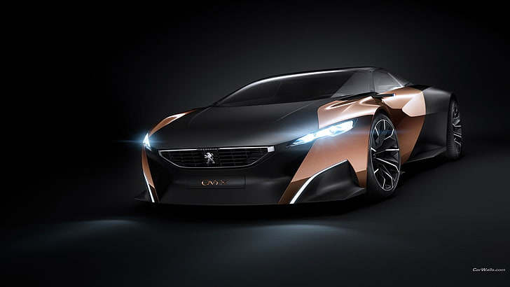

PEUGEOT
HOME

Historia
La marca Peugeot se remonta a inicios del siglo XIX cuando Jean-Jacques Peugeot se instala cerca de Doubs donde comienza a fabricar molinillos de café. Este primer medio de producción trae como consecuencia después de su fallecimiento la edificación de un emplazamiento para la construcción de molinillos en Sous-Cratet. Sus dos hijos, Jean-Pierre Peugeot y Jean-Georges Peugeot, crearán luego un imperio productivo.
El menor, Jean-Pierre, se lanza posteriormente en el sector del textil en Hérimoncourt bajo el impulso de Napoleón que necesitaba vestir a los soldados de su ejército y así se convierte en transformador de algodón. Este tendrá dos hijos, Jean-Pierre Peugeot junior y Jean-Frédéric Peugeot, que transformarán el molino de Sous-Cratet en una fundición en 1810 y después se lanzarán a la laminación en frío para abastecer a la industria de la relojería.
Es en 1832 cuando Jean-Pierre Peugeot se asocia con Jacques Maillard-Salins y fundan la sociedad "Peugeot Frères aînés et Jacques Maillard-Salins" (Primogénitos Peugeot y Jacques Maillard-Salins) para la explotación de la fundición de Sous-Cratet fabricando hojas de sierra. Los resultados son buenos y en 1833 una segunda fábrica en Terre-Blanche es construida. En 1852 Jean-Pierre (hijo) muere dejando dos hijos, Jules y Émile. Estos dos van a explotar nuevos sectores del comercio de la época.
En 1841 los hijos de Jean-Pierre se asocian con cuatro británicos, los hermanos Jackson, establecidos en la región de Saint-Étienne, y crean «Peugeot aînés et Jackson frères» en Pont-de-Roide-Vermondans para fabricar sierras de cinta, cierres de corsé y varillas de paraguas.
En 1885 Armand Peugeot se interesa por un nuevo invento, la bicicleta (que sigue hoy en día bajo el nombre de Peugeot Cycles). Cabe aclarar que la familia Peugeot se destacó también (y aún lo hace) en la fabricación artesanal de pimenteros y saleros de mesa finamente decorados por la marca del león. También fabricaron herramientas de alta calidad. Finalmente es en 1889 cuando Armand se lanza a la aventura del automóvil, presintiendo el éxito que cosechará este nuevo medio de transporte. Sin saberlo Armand creó la que hoy en día, es una de las marcas de automóviles con más tradición del mundo: Peugeot.